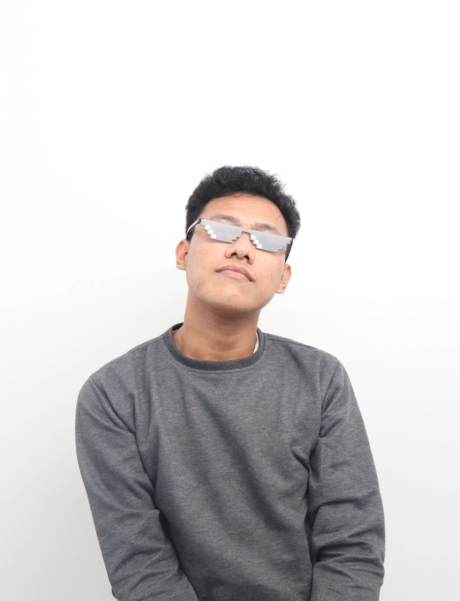

Membangun jembatan antara logika sistem yang kaku dengan imajinasi yang (jujur saja) agak kejauhan.
Panggil aja guwah Regie, Toji, atau Tohiks, terserah lu pada dah mau manggil ape, asal jangan dipanggil pas lagi sayang-sayangnya:^ Saya adalah manusia biasa sekaligus merupakan mahasiswa Sistem Informasi yang sedang berusaha menavigasi hidup di antara baris kode yang sering error dan berkreasi yang ga jauh-jauh dari multimedia yang nggak kenal waktu.
Saya penganut aliran bahwa setiap data punya cerita, tapi nggak semua cerita harus serius. Di luar kampus, hobi saya adalah "tersesat" secara sengaja lewat referensi visual yang nggak biasa dan tontonan alternatif yang (katanya) bisa produktif juga bisa jorang, padahal mungkin cuma alasan saya buat halu secara terstruktur, huahahahahaah...
Bagi saya, sedikit tersesat itu perlu banget. Kayak gini, Kalau lu nggak tersesat, kita nggak akan pernah tahu ada jalan pintas yang lebih asik buat menguasai dunia. Karena yang perlu kita tahu, banyak hal yang harus dan bisa lu eksplore, tetapi sedikit diantaranya yang perlu lu batasin karena ga semuanya orang ngeliat kita menerima atau bisa juga tidak menoleransi apa yang kita eksplore itu.